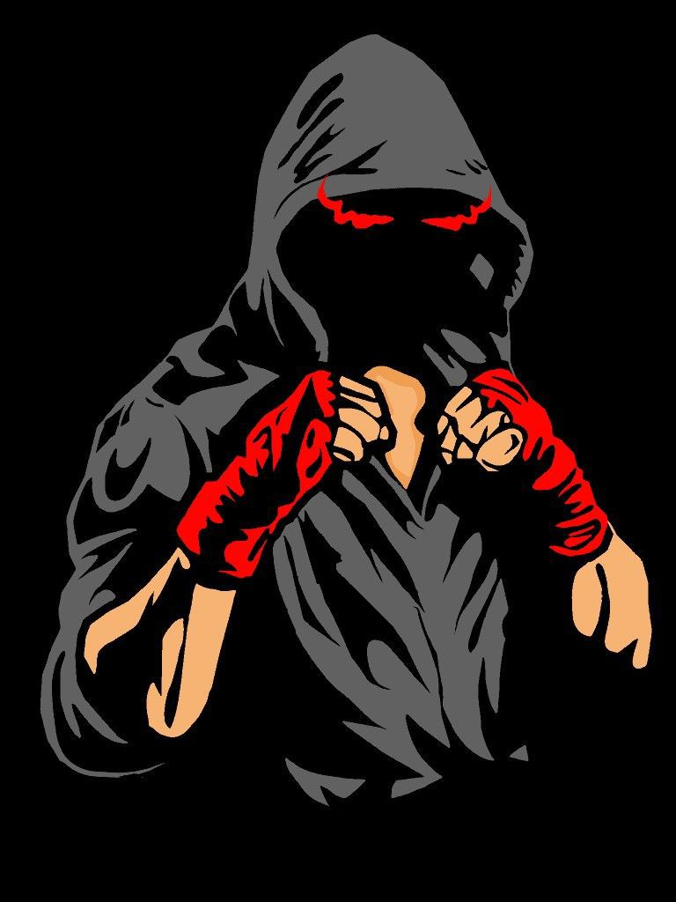

Mahasiswa yang berdedikasi tinggi dalam menyeimbangkan ilmu teknologi informasi modern, kedalaman spiritual studi Al-Qur'an & Hadis, serta disiplin fisik bela diri tradisional dan olahraga.
Saya adalah mahasiswa yang meyakini bahwa pengembangan diri terbaik didapatkan melalui keseimbangan yang harmonis. Dunia teknologi mengasah pemikiran logis dan kreativitas saya, sementara studi keislaman menanamkan komitmen moral, ketenangan jiwa, dan integritas. Di sisi lain, bela diri membentuk ketahanan mental, keberanian, dan disiplin fisik yang konsisten.
Kombinasi unik ini memungkinkan saya menghadapi tantangan dengan ketenangan seorang pembelajar spiritual, ketekunan seorang programmer, dan ketangguhan seorang petarung.
Membangun sistem web responsif dan dinamis berbasis PHP, MySQL, dan JS.
Menghayati nilai-nilai hadits, memperdalam tahfidz Al-Qur'an, dan memfasih bacaan.
Melatih ketahanan fisik, fokus, dan mental juara melalui Silat Gasmi dan Boxing.
Pondasi struktur web yang semantik, aksesibel, dan teroptimasi SEO secara standar industri.
Desain visual responsif, layouting Grid & Flexbox, transisi halus, animasi, dan custom properties CSS.
Logika interaktif di sisi klien (DOM manipulation), event handling, manipulasi data JSON, dan integrasi API.
Pemrograman backend sisi server untuk memproses data dinamis, manajemen sesi, dan routing dasar.
Desain basis data relasional, penulisan query SQL (SELECT, JOIN), optimasi tabel, dan konektivitas PHP-MySQL.
*"Sesungguhnya setiap amalan itu bergantung pada niatnya, dan sesungguhnya setiap orang hanya akan mendapatkan apa yang ia niatkan..."*
Berikut adalah kemajuan hafalan Al-Qur'an saya sebagai bagian dari disiplin spiritual harian.
Qiroati adalah metode praktis membaca Al-Qur'an secara langsung, cepat, tepat, dan benar (tartil) dengan menekankan pada pengucapan makhrojul huruf dan kepatuhan tajwid secara detail tanpa mengeja.
Membaca dengan tempo tepat dengan artikulasi makhraj yang sempurna.
Menghindari kesalahan bacaan (Lahn Jali & Khafi) dalam tilawah.
Berbekal sertifikasi kelayakan mengajar untuk menjaga orisinalitas bacaan.
Pemahaman teoritis komprehensif mengenai sejarah turunnya Al-Qur'an, metodologi tafsir, asbabun nuzul (sebab turunnya ayat), makkiyah-madaniyah, nasikh-mansukh, serta mukjizat kebahasaan Al-Qur'an.
Bela diri pencak silat tradisional di bawah naungan Ikatan Seni Pagar Nusa NU, mengedepankan aspek pertahanan diri, seni spiritual, dan loyalitas organisasi.

Olahraga kontak fisik yang berfokus pada teknik pukulan, kecepatan refleks, ketahanan kardiovaskular, dan taktik pertarungan yang disiplin.
Merancang dan membangun website portofolio interaktif 7 modul dengan tema gelap premium dan desain responsif menggunakan HTML, CSS, dan JS.
Selesai (Live)Kelulusan ujian kenaikan tingkat sabuk pencak silat Gasmi Pagar Nusa dengan pengujian ketahanan fisik, penguasaan jurus, dan kesetiaan organisasi.
TersertifikasiMeraih peringkat 1 juara dalam perlombaan Syiar Kultum (Kuliah Tujuh Menit) Online tingkat umum yang diselenggarakan oleh LDK EL RAHMA.
Juara PenghargaanApakah Anda membutuhkan pengembang web junior, pengajar tahfidz/baca tulis Al-Qur'an, atau ingin bertukar informasi mengenai seni bela diri? Silakan hubungi saya melalui salah satu saluran berikut:
Dokumen CV lengkap dalam bahasa Indonesia dan Inggris dapat diunduh di bawah ini:
Unduh CV (PDF)